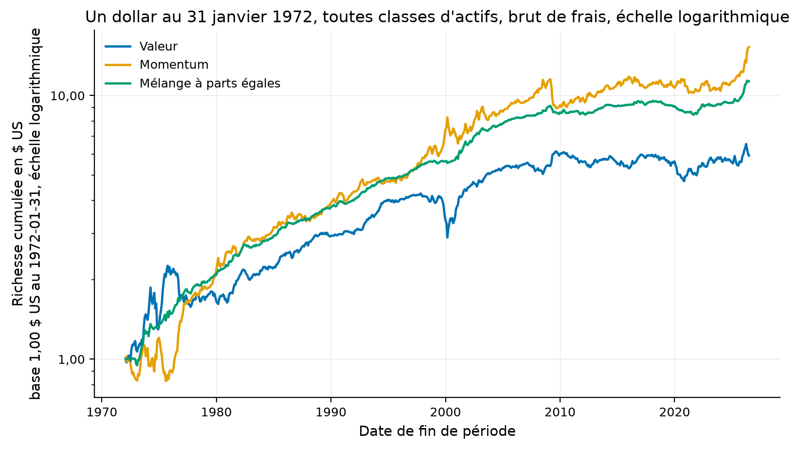
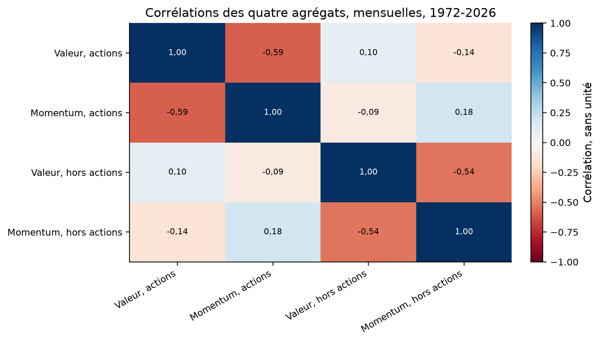
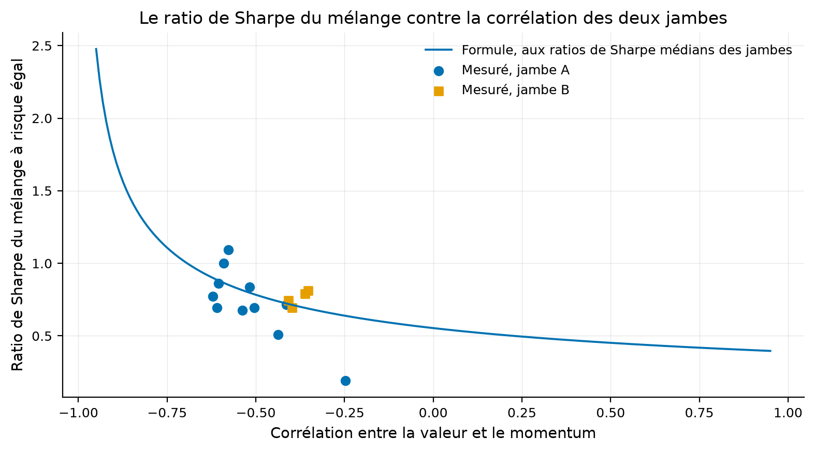
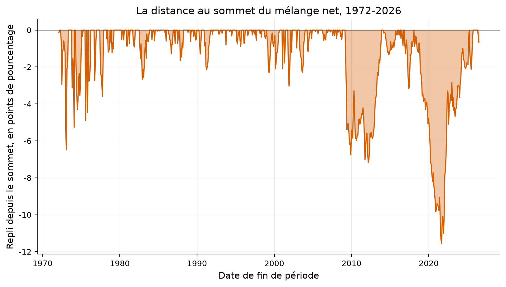
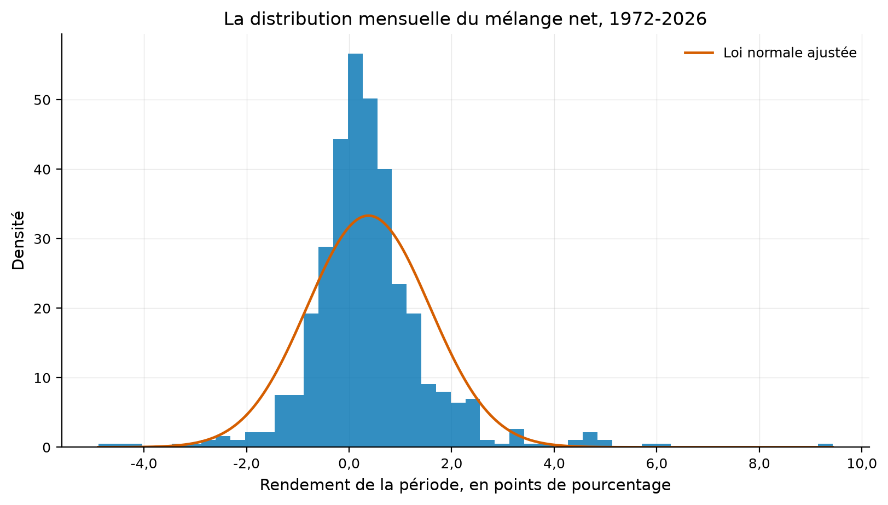
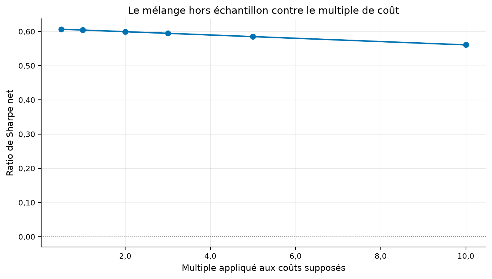
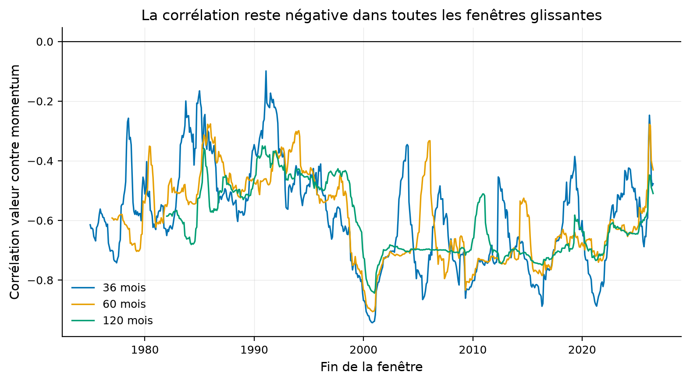
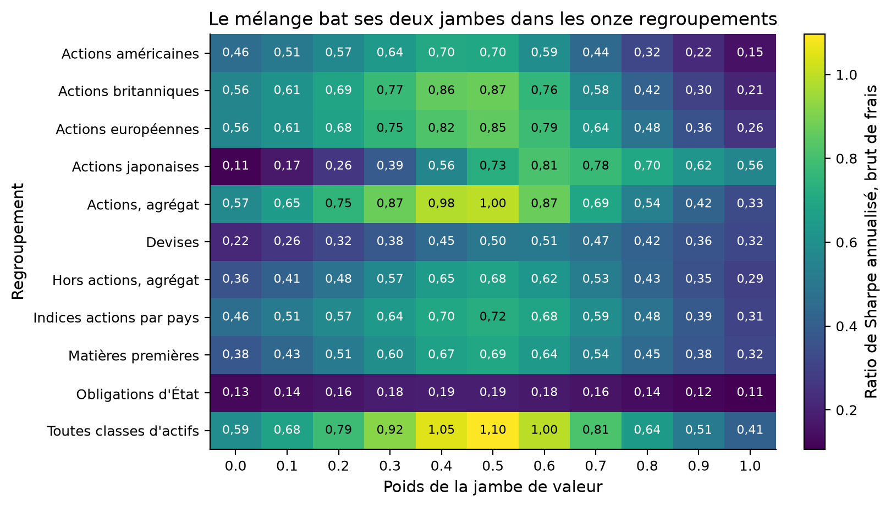
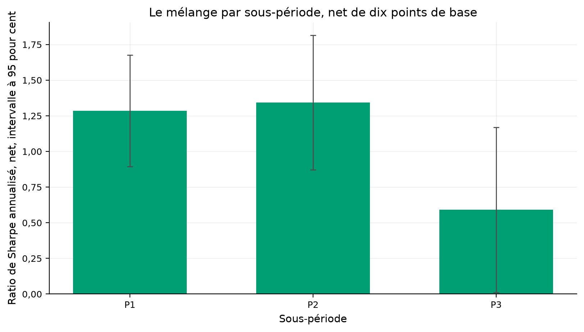

Verdict : EXPERIMENTAL
La valeur et le momentum sont-ils deux anomalies séparées, ou deux faces d'un même phénomène dont la corrélation négative fait tout le rendement du mélange ?
Asness, Moskowitz et Pedersen (2013), Value and Momentum Everywhere, Journal of Finance 68(3). Les chiffres cibles viennent de sa table I, colonne facteur.
Chaque paire donne une corrélation, deux ratios de Sharpe de jambe, et deux mélanges. Le premier pèse les dollars à parts égales, le second égalise les risques. La forme fermée du second prédit le résultat depuis trois nombres.
Onze paires viennent des facteurs publiés par AQR, mensuels depuis janvier 1972. Quatre paires sont bâties sur les portefeuilles triés de Kenneth French, sans biais de survie, depuis 1927.
La logique vit dans quantlab.strategies.value_momentum. Le mélange à parts égales n'estime rien. Le mélange à risque égal estime deux écarts types, et sa version tenable les calcule sur une fenêtre en expansion décalée d'un mois.
Les facteurs sont autofinancés, donc leur rendement est déjà excédentaire. Les coûts internes de chaque jambe ne sont pas publiés et ne sont pas retranchés.
La corrélation de la paire toutes classes d'actifs vaut -0.577 contre -0,60 publié.
| quantity | published | ours | absolute_error | relative_error | tolerance | tolerance_kind | verdict | source |
|---|---|---|---|---|---|---|---|---|
| corrélation valeur contre momentum, Toutes classes d'actifs | -0.60 | -0.586008 | 0.013992 | 0.023319 | 0.058730 | absolute | répliqué | Asness, Moskowitz et Pedersen (2013), table I, colonne « facteur » |
| corrélation valeur contre momentum, Actions, agrégat | -0.60 | -0.598440 | 0.001560 | 0.002599 | 0.058792 | absolute | répliqué | Asness, Moskowitz et Pedersen (2013), table I, colonne « facteur » |
| corrélation valeur contre momentum, Hors actions, agrégat | -0.49 | -0.537724 | 0.047724 | 0.097397 | 0.069733 | absolute | répliqué | Asness, Moskowitz et Pedersen (2013), table I, colonne « facteur » |
| corrélation valeur contre momentum, Actions américaines | -0.65 | -0.623171 | 0.026829 | 0.041275 | 0.053051 | absolute | répliqué | Asness, Moskowitz et Pedersen (2013), table I, colonne « facteur » |
| corrélation valeur contre momentum, Actions britanniques | -0.62 | -0.639185 | 0.019185 | 0.030943 | 0.064800 | absolute | répliqué | Asness, Moskowitz et Pedersen (2013), table I, colonne « facteur » |
| corrélation valeur contre momentum, Actions européennes | -0.55 | -0.510354 | 0.039646 | 0.072084 | 0.073421 | absolute | répliqué | Asness, Moskowitz et Pedersen (2013), table I, colonne « facteur » |
| corrélation valeur contre momentum, Actions japonaises | -0.64 | -0.637364 | 0.002636 | 0.004119 | 0.062147 | absolute | répliqué | Asness, Moskowitz et Pedersen (2013), table I, colonne « facteur » |
| corrélation valeur contre momentum, Indices actions par pays | -0.37 | -0.389181 | 0.019181 | 0.051839 | 0.084941 | absolute | répliqué | Asness, Moskowitz et Pedersen (2013), table I, colonne « facteur » |
| corrélation valeur contre momentum, Devises | -0.43 | -0.433605 | 0.003605 | 0.008384 | 0.082443 | absolute | répliqué | Asness, Moskowitz et Pedersen (2013), table I, colonne « facteur » |
| corrélation valeur contre momentum, Obligations d'État | -0.35 | -0.224437 | 0.125563 | 0.358752 | 0.094761 | absolute | écart | Asness, Moskowitz et Pedersen (2013), table I, colonne « facteur » |
| corrélation valeur contre momentum, Matières premières | -0.46 | -0.471434 | 0.011434 | 0.024857 | 0.072349 | absolute | répliqué | Asness, Moskowitz et Pedersen (2013), table I, colonne « facteur » |
| key | pair | n_months | start | end | correlation | correlation_stderr | sharpe_value | sharpe_momentum | sharpe_equal_weight | sharpe_risk_parity | sharpe_risk_parity_formula | formula_gap | volatility_value_pct | volatility_momentum_pct | gain_over_best_leg | diversification_multiplier | sharpe_per_unit_correlation | published_correlation | published_correlation_high_minus_low | published_sharpe_value | published_sharpe_momentum | published_sharpe_blend | correlation_gap | correlation_gap_in_sigmas |
|---|---|---|---|---|---|---|---|---|---|---|---|---|---|---|---|---|---|---|---|---|---|---|---|---|
| EVERYWHERE | Toutes classes d'actifs | 475 | 1972-01-31 | 2011-07-31 | -0.586008 | 0.030127 | 0.499795 | 0.631714 | 1.244912 | 1.243505 | 1.243505 | 2.220446e-16 | 9.725623 | 9.964377 | 0.613198 | 1.554191 | -1.501848 | -0.60 | -0.53 | 0.72 | 0.74 | 1.59 | 0.013992 | 0.476467 |
| ALL_EQUITIES | Actions, agrégat | 474 | 1972-02-29 | 2011-07-31 | -0.598440 | 0.029482 | 0.470503 | 0.590007 | 1.180735 | 1.183381 | 1.183381 | 0.000000e+00 | 12.166134 | 11.793090 | 0.590729 | 1.578065 | -1.473481 | -0.60 | -0.52 | 0.51 | 0.59 | 1.28 | 0.001560 | 0.053054 |
| ALL_OTHER | Hors actions, agrégat | 475 | 1972-01-31 | 2011-07-31 | -0.537724 | 0.032616 | 0.317595 | 0.432898 | 0.780745 | 0.780514 | 0.780514 | 1.110223e-16 | 13.419627 | 13.472419 | 0.347847 | 1.470786 | -0.844209 | -0.49 | -0.40 | 0.55 | 0.62 | 1.14 | -0.047724 | -1.368770 |
| US | Actions américaines | 474 | 1972-02-29 | 2011-07-31 | -0.623171 | 0.028094 | 0.267985 | 0.461517 | 0.844419 | 0.840310 | 0.840310 | 0.000000e+00 | 15.829783 | 16.561686 | 0.382902 | 1.629026 | -1.114976 | -0.65 | -0.53 | 0.26 | 0.45 | 0.86 | 0.026829 | 1.011439 |
| UK | Actions britanniques | 361 | 1981-07-31 | 2011-07-31 | -0.639185 | 0.031129 | 0.338584 | 0.557887 | 1.062168 | 1.055308 | 1.055308 | 4.440892e-16 | 14.938935 | 16.460532 | 0.504280 | 1.664783 | -1.462395 | -0.62 | -0.43 | 0.38 | 0.48 | 1.07 | -0.019185 | -0.592127 |
| EU | Actions européennes | 361 | 1981-07-31 | 2011-07-31 | -0.510354 | 0.038923 | 0.467751 | 0.553817 | 1.017389 | 1.032312 | 1.032312 | 0.000000e+00 | 10.572313 | 13.736249 | 0.463571 | 1.429087 | -1.054141 | -0.55 | -0.52 | 0.54 | 0.75 | 1.20 | 0.039646 | 1.079972 |
| JP | Actions japonaises | 361 | 1981-07-31 | 2011-07-31 | -0.637364 | 0.031251 | 0.711902 | 0.109119 | 0.883054 | 0.964059 | 0.964059 | 2.220446e-16 | 14.500809 | 17.412009 | 0.171153 | 1.660598 | -1.329238 | -0.64 | -0.60 | 0.77 | 0.13 | 0.88 | 0.002636 | 0.084831 |
| EQ | Indices actions par pays | 413 | 1977-03-31 | 2011-07-31 | -0.389181 | 0.041754 | 0.507257 | 0.580313 | 0.977562 | 0.983979 | 0.983979 | 2.220446e-16 | 9.223850 | 11.547208 | 0.397249 | 1.279510 | -0.805458 | -0.37 | -0.34 | 0.60 | 0.63 | 1.00 | -0.019181 | -0.451623 |
| FX | Devises | 391 | 1979-01-31 | 2011-07-31 | -0.433605 | 0.041064 | 0.410998 | 0.329778 | 0.689846 | 0.696005 | 0.696005 | 0.000000e+00 | 7.926975 | 8.779008 | 0.278848 | 1.328741 | -0.614416 | -0.43 | -0.42 | 0.44 | 0.32 | 0.69 | -0.003605 | -0.087454 |
| FI | Obligations d'État | 343 | 1983-01-31 | 2011-07-31 | -0.224437 | 0.051275 | 0.160334 | 0.137801 | 0.239720 | 0.239381 | 0.239381 | 2.775558e-17 | 5.974784 | 5.191006 | 0.079386 | 1.135511 | -0.154327 | -0.35 | -0.17 | 0.07 | 0.17 | 0.20 | 0.125563 | 2.650100 |
| COM | Matières premières | 475 | 1972-01-31 | 2011-07-31 | -0.471434 | 0.035686 | 0.258580 | 0.520062 | 0.750257 | 0.757310 | 0.757310 | 0.000000e+00 | 23.490669 | 22.338677 | 0.230196 | 1.375468 | -0.716381 | -0.46 | -0.39 | 0.31 | 0.51 | 0.77 | -0.011434 | -0.316086 |
| key | pair | panel | n_months | start | correlation | sharpe_value | sharpe_momentum | sharpe_equal_weight | published_sharpe_blend |
|---|---|---|---|---|---|---|---|---|---|
| EVERYWHERE | Toutes classes d'actifs | panneau déséquilibré | 475 | 1972-01-31 | -0.586008 | 0.499795 | 0.631714 | 1.244912 | 1.59 |
| EVERYWHERE | Toutes classes d'actifs | panneau équilibré | 343 | 1983-01-31 | -0.639043 | 0.641718 | 0.635569 | 1.465889 | 1.59 |
| ALL_EQUITIES | Actions, agrégat | panneau déséquilibré | 474 | 1972-02-29 | -0.598440 | 0.470503 | 0.590007 | 1.180735 | 1.28 |
| ALL_EQUITIES | Actions, agrégat | panneau équilibré | 343 | 1983-01-31 | -0.664867 | 0.503635 | 0.489979 | 1.201463 | 1.28 |
| ALL_OTHER | Hors actions, agrégat | panneau déséquilibré | 475 | 1972-01-31 | -0.537724 | 0.317595 | 0.432898 | 0.780745 | 1.14 |
| ALL_OTHER | Hors actions, agrégat | panneau équilibré | 343 | 1983-01-31 | -0.462938 | 0.487883 | 0.625477 | 1.077070 | 1.14 |
Tous les chiffres portent leur échantillon et leur base de coût dans le tableau ci-dessous.
| metric | value | sample | cost_basis |
|---|---|---|---|
| correlation_toutes_classes | -5.773117e-01 | VALIDATION | gross |
| sharpe_valeur_toutes_classes | 4.124013e-01 | VALIDATION | gross |
| sharpe_momentum_toutes_classes | 5.928583e-01 | VALIDATION | gross |
| sharpe_melange_parts_egales | 1.095840e+00 | VALIDATION | gross |
| sharpe_melange_risque_egal | 1.093335e+00 | VALIDATION | gross |
| gain_sur_la_meilleure_jambe | 5.029819e-01 | VALIDATION | gross |
| multiplicateur_de_diversification | 1.538119e+00 | VALIDATION | gross |
| sharpe_par_unite_de_correlation | -1.293311e+00 | VALIDATION | gross |
| ecart_maximal_mesure_contre_formule | 5.551115e-16 | VALIDATION | gross |
| sharpe_melange_oos_net | 6.041764e-01 | OOS | net |
| rotation_annualisee | 1.763626e-01 | VALIDATION | gross |
| cout_de_rentabilite_bps | 2.581270e+03 | VALIDATION | gross |
| probabilite_de_surapprentissage | 0.000000e+00 | VALIDATION | net |
| sharpe_degonfle | 4.586718e-03 | OOS | net |
| t_apres_correction | 0.000000e+00 | OOS | net |
| part_de_sous_periodes_positives | 1.000000e+00 | VALIDATION | net |
| correlation_avec_le_marche | -1.594738e-01 | VALIDATION | gross |
| cpcv_sharpe_moyen | 1.091616e+00 | OOS | net |
| cpcv_part_de_chemins_negatifs | 0.000000e+00 | OOS | net |
| key | pair | n_months | start | end | correlation | correlation_stderr | sharpe_value | sharpe_momentum | sharpe_equal_weight | sharpe_risk_parity | sharpe_risk_parity_formula | formula_gap | volatility_value_pct | volatility_momentum_pct | gain_over_best_leg | diversification_multiplier | sharpe_per_unit_correlation | leg |
|---|---|---|---|---|---|---|---|---|---|---|---|---|---|---|---|---|---|---|
| EVERYWHERE | Toutes classes d'actifs | 654 | 1972-01-31 | 2026-06-30 | -0.577312 | 0.026070 | 0.412401 | 0.592858 | 1.095840 | 1.093335 | 1.093335 | 2.220446e-16 | 8.882042 | 9.155480 | 0.502982 | 1.538119 | -1.293311 | A |
| ALL_EQUITIES | Actions, agrégat | 653 | 1972-02-29 | 2026-06-30 | -0.590424 | 0.025491 | 0.333425 | 0.571054 | 0.995561 | 0.999346 | 0.999346 | 4.440892e-16 | 11.666696 | 11.363956 | 0.424507 | 1.562545 | -1.219975 | A |
| ALL_OTHER | Hors actions, agrégat | 637 | 1972-01-31 | 2025-01-31 | -0.537849 | 0.028160 | 0.292936 | 0.357904 | 0.677227 | 0.676966 | 0.676966 | 2.220446e-16 | 11.775091 | 11.872860 | 0.319323 | 1.470985 | -0.732409 | A |
| US | Actions américaines | 653 | 1972-02-29 | 2026-06-30 | -0.609918 | 0.024576 | 0.154435 | 0.459431 | 0.700528 | 0.694993 | 0.694993 | 1.110223e-16 | 14.891408 | 15.415098 | 0.241098 | 1.601113 | -0.890829 | A |
| UK | Actions britanniques | 540 | 1981-07-31 | 2026-06-30 | -0.604558 | 0.027305 | 0.210100 | 0.555131 | 0.873645 | 0.860470 | 0.860470 | 3.330669e-16 | 14.084654 | 15.319724 | 0.318514 | 1.590224 | -1.087984 | A |
| EU | Actions européennes | 540 | 1981-07-31 | 2026-06-30 | -0.516962 | 0.031533 | 0.260405 | 0.561604 | 0.853030 | 0.836317 | 0.836317 | 2.220446e-16 | 10.782710 | 12.884020 | 0.291426 | 1.438829 | -0.865683 | A |
| JP | Actions japonaises | 540 | 1981-07-31 | 2026-06-30 | -0.621085 | 0.026433 | 0.561804 | 0.110038 | 0.727958 | 0.771757 | 0.771757 | 3.330669e-16 | 13.820897 | 15.896331 | 0.166154 | 1.624535 | -1.018377 | A |
| EQ | Indices actions par pays | 575 | 1977-03-31 | 2025-01-31 | -0.413738 | 0.034564 | 0.310213 | 0.464868 | 0.721502 | 0.715791 | 0.715791 | 2.220446e-16 | 9.404430 | 10.785417 | 0.256634 | 1.306033 | -0.610471 | A |
| FX | Devises | 553 | 1979-01-31 | 2025-01-31 | -0.436654 | 0.034416 | 0.319212 | 0.220685 | 0.503113 | 0.508638 | 0.508638 | 1.110223e-16 | 7.453920 | 8.161853 | 0.183901 | 1.332332 | -0.451444 | A |
| FI | Obligations d'État | 505 | 1983-01-31 | 2025-01-31 | -0.247884 | 0.041765 | 0.105698 | 0.127960 | 0.188601 | 0.190512 | 0.190512 | 5.551115e-17 | 5.099300 | 4.460276 | 0.060641 | 1.153075 | -0.126651 | A |
| COM | Matières premières | 637 | 1972-01-31 | 2025-01-31 | -0.504202 | 0.029549 | 0.316029 | 0.375873 | 0.693760 | 0.694828 | 0.694828 | 0.000000e+00 | 22.011652 | 21.394418 | 0.317887 | 1.420194 | -0.700716 | A |
| FF_HML_UMD | HML contre momentum de Carhart | 1194 | 1927-01-31 | 2026-06-30 | -0.408300 | 0.024115 | 0.345579 | 0.463958 | 0.742761 | 0.744168 | 0.744168 | 0.000000e+00 | 12.321305 | 16.209014 | 0.278803 | 1.300018 | -0.628840 | B |
| FF_RANK_5X5 | Rang sur quintiles, taille neutralisée | 1194 | 1927-01-31 | 2026-06-30 | -0.361127 | 0.025166 | 0.397681 | 0.495382 | 0.782808 | 0.790059 | 0.790059 | 1.110223e-16 | 11.134861 | 15.379700 | 0.287426 | 1.251102 | -0.618322 | B |
| FF_SPREAD_5X5 | Haut moins bas sur quintiles | 1194 | 1927-01-31 | 2026-06-30 | -0.353329 | 0.025327 | 0.403041 | 0.518154 | 0.804644 | 0.810018 | 0.810018 | 2.220446e-16 | 13.970620 | 19.365204 | 0.286490 | 1.243536 | -0.626299 | B |
| FF_HML_DECILES | HML contre déciles 12-2 | 1194 | 1927-01-31 | 2026-06-30 | -0.397519 | 0.024367 | 0.345579 | 0.417222 | 0.680474 | 0.694904 | 0.694904 | 0.000000e+00 | 12.321305 | 17.916669 | 0.263251 | 1.288333 | -0.576702 | B |
| key | pair | leg | n_months | correlation | sharpe_equal_weight_measured | sharpe_equal_weight_formula | sharpe_risk_parity_measured | sharpe_risk_parity_formula | sharpe_if_independent | diversification_multiplier | sharpe_per_unit_correlation | sharpe_from_correlation | max_absolute_gap |
|---|---|---|---|---|---|---|---|---|---|---|---|---|---|
| EVERYWHERE | Toutes classes d'actifs | A | 654 | -0.577312 | 1.095840 | 1.095840 | 1.093335 | 1.093335 | 0.710826 | 1.538119 | -1.293311 | 0.382509 | 2.220446e-16 |
| ALL_EQUITIES | Actions, agrégat | A | 653 | -0.590424 | 0.995561 | 0.995561 | 0.999346 | 0.999346 | 0.639563 | 1.562545 | -1.219975 | 0.359783 | 4.440892e-16 |
| ALL_OTHER | Hors actions, agrégat | A | 637 | -0.537849 | 0.677227 | 0.677227 | 0.676966 | 0.676966 | 0.460213 | 1.470985 | -0.732409 | 0.216753 | 5.551115e-16 |
| US | Actions américaines | A | 653 | -0.609918 | 0.700528 | 0.700528 | 0.694993 | 0.694993 | 0.434069 | 1.601113 | -0.890829 | 0.260924 | 1.110223e-16 |
| UK | Actions britanniques | A | 540 | -0.604558 | 0.873645 | 0.873645 | 0.860470 | 0.860470 | 0.541100 | 1.590224 | -1.087984 | 0.319370 | 3.330669e-16 |
| EU | Actions européennes | A | 540 | -0.516962 | 0.853030 | 0.853030 | 0.836317 | 0.836317 | 0.581248 | 1.438829 | -0.865683 | 0.255068 | 2.220446e-16 |
| JP | Actions japonaises | A | 540 | -0.621085 | 0.727958 | 0.727958 | 0.771757 | 0.771757 | 0.475064 | 1.624535 | -1.018377 | 0.296694 | 3.330669e-16 |
| EQ | Indices actions par pays | A | 575 | -0.413738 | 0.721502 | 0.721502 | 0.715791 | 0.715791 | 0.548065 | 1.306033 | -0.610471 | 0.167726 | 2.220446e-16 |
| FX | Devises | A | 553 | -0.436654 | 0.503113 | 0.503113 | 0.508638 | 0.508638 | 0.381765 | 1.332332 | -0.451444 | 0.126873 | 2.220446e-16 |
| FI | Obligations d'État | A | 505 | -0.247884 | 0.188601 | 0.188601 | 0.190512 | 0.190512 | 0.165221 | 1.153075 | -0.126651 | 0.025291 | 1.110223e-16 |
| COM | Matières premières | A | 637 | -0.504202 | 0.693760 | 0.693760 | 0.694828 | 0.694828 | 0.489248 | 1.420194 | -0.700716 | 0.205579 | 1.110223e-16 |
| FF_HML_UMD | HML contre momentum de Carhart | B | 1194 | -0.408300 | 0.742761 | 0.742761 | 0.744168 | 0.744168 | 0.572429 | 1.300018 | -0.628840 | 0.171739 | 0.000000e+00 |
| FF_RANK_5X5 | Rang sur quintiles, taille neutralisée | B | 1194 | -0.361127 | 0.782808 | 0.782808 | 0.790059 | 0.790059 | 0.631491 | 1.251102 | -0.618322 | 0.158568 | 2.220446e-16 |
| FF_SPREAD_5X5 | Haut moins bas sur quintiles | B | 1194 | -0.353329 | 0.804644 | 0.804644 | 0.810018 | 0.810018 | 0.651383 | 1.243536 | -0.626299 | 0.158635 | 2.220446e-16 |
| FF_HML_DECILES | HML contre déciles 12-2 | B | 1194 | -0.397519 | 0.680474 | 0.680474 | 0.694904 | 0.694904 | 0.539382 | 1.288333 | -0.576702 | 0.155522 | 0.000000e+00 |





La rotation annualisée du seul rééquilibrage vaut 0.18 et le coût qui annule le rendement brut vaut 2581 points de base.
| rebalance_months | n_months | annual_turnover | gross_sharpe | net_sharpe | max_value_weight | min_value_weight |
|---|---|---|---|---|---|---|
| 1 | 654 | 0.176363 | 1.095840 | 1.091616 | 0.500000 | 0.500000 |
| 3 | 654 | 0.264508 | 1.106678 | 1.100317 | 0.585958 | 0.398701 |
| 6 | 654 | 0.277393 | 1.107605 | 1.100967 | 0.670246 | 0.378305 |
| 12 | 654 | 0.267547 | 1.082010 | 1.075789 | 0.702986 | 0.345497 |
| cost_bps | n_months | gross_annual_pct | net_annual_pct | annual_turnover | net_sharpe | breakeven_cost_bps | turnover_that_cancels_gross |
|---|---|---|---|---|---|---|---|
| 0.0 | 654 | 4.545434 | 4.545434 | 0.176363 | 1.095840 | 2581.270431 | inf |
| 1.0 | 654 | 4.545434 | 4.543673 | 0.176363 | 1.095418 | 2581.270431 | 454.54340 |
| 10.0 | 654 | 4.545434 | 4.527825 | 0.176363 | 1.091616 | 2581.270431 | 45.45434 |
| 20.0 | 654 | 4.545434 | 4.510215 | 0.176363 | 1.087390 | 2581.270431 | 22.72717 |

Le poids du mélange, la fenêtre de la corrélation, la période de tension, le pas de rééquilibrage et le délai d'exécution sont balayés. Chaque cellule compte comme un essai.
| construction | price_lag | n_months | correlation | published_reference |
|---|---|---|---|---|
| AQR, valeur au prix courant, actions américaines | aucun | 474 | -0.623171 | -0.53 |
| Kenneth French, HML contre momentum de Carhart | capitalisation de décembre de l'année précédente | 475 | -0.167984 | -0.28 |
| key | pair | value_weight | n_months | sharpe |
|---|---|---|---|---|
| EVERYWHERE | Toutes classes d'actifs | 0.0 | 654 | 0.592858 |
| EVERYWHERE | Toutes classes d'actifs | 0.1 | 654 | 0.676630 |
| EVERYWHERE | Toutes classes d'actifs | 0.2 | 654 | 0.785142 |
| EVERYWHERE | Toutes classes d'actifs | 0.3 | 654 | 0.918271 |
| EVERYWHERE | Toutes classes d'actifs | 0.4 | 654 | 1.048946 |
| EVERYWHERE | Toutes classes d'actifs | 0.5 | 654 | 1.095840 |
| EVERYWHERE | Toutes classes d'actifs | 0.6 | 654 | 0.995053 |
| EVERYWHERE | Toutes classes d'actifs | 0.7 | 654 | 0.814676 |
| EVERYWHERE | Toutes classes d'actifs | 0.8 | 654 | 0.644556 |
| EVERYWHERE | Toutes classes d'actifs | 0.9 | 654 | 0.511749 |
| EVERYWHERE | Toutes classes d'actifs | 1.0 | 654 | 0.412401 |
| ALL_EQUITIES | Actions, agrégat | 0.0 | 653 | 0.571054 |
| ALL_EQUITIES | Actions, agrégat | 0.1 | 653 | 0.649914 |
| ALL_EQUITIES | Actions, agrégat | 0.2 | 653 | 0.751825 |
| ALL_EQUITIES | Actions, agrégat | 0.3 | 653 | 0.874255 |
| ALL_EQUITIES | Actions, agrégat | 0.4 | 653 | 0.983644 |
| ALL_EQUITIES | Actions, agrégat | 0.5 | 653 | 0.995561 |
| ALL_EQUITIES | Actions, agrégat | 0.6 | 653 | 0.870256 |
| ALL_EQUITIES | Actions, agrégat | 0.7 | 653 | 0.692751 |
| ALL_EQUITIES | Actions, agrégat | 0.8 | 653 | 0.537835 |
| ALL_EQUITIES | Actions, agrégat | 0.9 | 653 | 0.420382 |
| ALL_EQUITIES | Actions, agrégat | 1.0 | 653 | 0.333425 |
| ALL_OTHER | Hors actions, agrégat | 0.0 | 637 | 0.357904 |
| ALL_OTHER | Hors actions, agrégat | 0.1 | 637 | 0.412759 |
| ALL_OTHER | Hors actions, agrégat | 0.2 | 637 | 0.482935 |
| ALL_OTHER | Hors actions, agrégat | 0.3 | 637 | 0.567176 |
| ALL_OTHER | Hors actions, agrégat | 0.4 | 637 | 0.647391 |
| ALL_OTHER | Hors actions, agrégat | 0.5 | 637 | 0.677227 |
| ALL_OTHER | Hors actions, agrégat | 0.6 | 637 | 0.624964 |
| ALL_OTHER | Hors actions, agrégat | 0.7 | 637 | 0.526805 |
| ALL_OTHER | Hors actions, agrégat | 0.8 | 637 | 0.430433 |
| ALL_OTHER | Hors actions, agrégat | 0.9 | 637 | 0.352611 |
| ALL_OTHER | Hors actions, agrégat | 1.0 | 637 | 0.292936 |
| US | Actions américaines | 0.0 | 653 | 0.459431 |
| US | Actions américaines | 0.1 | 653 | 0.507256 |
| US | Actions américaines | 0.2 | 653 | 0.568394 |
| US | Actions américaines | 0.3 | 653 | 0.641131 |
| US | Actions américaines | 0.4 | 653 | 0.704603 |
| US | Actions américaines | 0.5 | 653 | 0.700528 |
| US | Actions américaines | 0.6 | 653 | 0.591948 |
| US | Actions américaines | 0.7 | 653 | 0.442447 |
| US | Actions américaines | 0.8 | 653 | 0.315346 |
| US | Actions américaines | 0.9 | 653 | 0.221853 |
| US | Actions américaines | 1.0 | 653 | 0.154435 |
| UK | Actions britanniques | 0.0 | 540 | 0.555131 |
| UK | Actions britanniques | 0.1 | 540 | 0.612248 |
| UK | Actions britanniques | 0.2 | 540 | 0.685476 |
| UK | Actions britanniques | 0.3 | 540 | 0.774248 |
| UK | Actions britanniques | 0.4 | 540 | 0.858525 |
| UK | Actions britanniques | 0.5 | 540 | 0.873645 |
| UK | Actions britanniques | 0.6 | 540 | 0.760444 |
| UK | Actions britanniques | 0.7 | 540 | 0.579935 |
| UK | Actions britanniques | 0.8 | 540 | 0.418260 |
| UK | Actions britanniques | 0.9 | 540 | 0.297439 |
| UK | Actions britanniques | 1.0 | 540 | 0.210100 |
| EU | Actions européennes | 0.0 | 540 | 0.561604 |
| EU | Actions européennes | 0.1 | 540 | 0.613262 |
| EU | Actions européennes | 0.2 | 540 | 0.677284 |
| EU | Actions européennes | 0.3 | 540 | 0.752428 |
| EU | Actions européennes | 0.4 | 540 | 0.824857 |
| EU | Actions européennes | 0.5 | 540 | 0.853030 |
| EU | Actions européennes | 0.6 | 540 | 0.785956 |
| EU | Actions européennes | 0.7 | 540 | 0.640167 |
| EU | Actions européennes | 0.8 | 540 | 0.484686 |
| EU | Actions européennes | 0.9 | 540 | 0.357002 |
| EU | Actions européennes | 1.0 | 540 | 0.260405 |
| JP | Actions japonaises | 0.0 | 540 | 0.110038 |
| JP | Actions japonaises | 0.1 | 540 | 0.174234 |
| JP | Actions japonaises | 0.2 | 540 | 0.263324 |
| JP | Actions japonaises | 0.3 | 540 | 0.388446 |
| JP | Actions japonaises | 0.4 | 540 | 0.555112 |
| JP | Actions japonaises | 0.5 | 540 | 0.727958 |
| JP | Actions japonaises | 0.6 | 540 | 0.810590 |
| JP | Actions japonaises | 0.7 | 540 | 0.775726 |
| JP | Actions japonaises | 0.8 | 540 | 0.696722 |
| JP | Actions japonaises | 0.9 | 540 | 0.621845 |
| JP | Actions japonaises | 1.0 | 540 | 0.561804 |
| EQ | Indices actions par pays | 0.0 | 575 | 0.464868 |
| EQ | Indices actions par pays | 0.1 | 575 | 0.513427 |
| EQ | Indices actions par pays | 0.2 | 575 | 0.571832 |
| EQ | Indices actions par pays | 0.3 | 575 | 0.637341 |
| EQ | Indices actions par pays | 0.4 | 575 | 0.696991 |
| EQ | Indices actions par pays | 0.5 | 575 | 0.721502 |
| EQ | Indices actions par pays | 0.6 | 575 | 0.682245 |
| EQ | Indices actions par pays | 0.7 | 575 | 0.589571 |
| EQ | Indices actions par pays | 0.8 | 575 | 0.482472 |
| EQ | Indices actions par pays | 0.9 | 575 | 0.387120 |
| EQ | Indices actions par pays | 1.0 | 575 | 0.310213 |
| FX | Devises | 0.0 | 553 | 0.220685 |
| FX | Devises | 0.1 | 553 | 0.263610 |
| FX | Devises | 0.2 | 553 | 0.317905 |
| FX | Devises | 0.3 | 553 | 0.383700 |
| FX | Devises | 0.4 | 553 | 0.453115 |
| FX | Devises | 0.5 | 553 | 0.503113 |
| FX | Devises | 0.6 | 553 | 0.507595 |
| FX | Devises | 0.7 | 553 | 0.469634 |
| FX | Devises | 0.8 | 553 | 0.415224 |
| FX | Devises | 0.9 | 553 | 0.363060 |
| FX | Devises | 1.0 | 553 | 0.319212 |
| FI | Obligations d'État | 0.0 | 505 | 0.127960 |
| FI | Obligations d'État | 0.1 | 505 | 0.144819 |
| FI | Obligations d'État | 0.2 | 505 | 0.163141 |
| FI | Obligations d'État | 0.3 | 505 | 0.180005 |
| FI | Obligations d'État | 0.4 | 505 | 0.190111 |
| FI | Obligations d'État | 0.5 | 505 | 0.188601 |
| FI | Obligations d'État | 0.6 | 505 | 0.175890 |
| FI | Obligations d'État | 0.7 | 505 | 0.157271 |
| FI | Obligations d'État | 0.8 | 505 | 0.137923 |
| FI | Obligations d'État | 0.9 | 505 | 0.120491 |
| FI | Obligations d'État | 1.0 | 505 | 0.105698 |
| COM | Matières premières | 0.0 | 637 | 0.375873 |
| COM | Matières premières | 0.1 | 637 | 0.434820 |
| COM | Matières premières | 0.2 | 637 | 0.508966 |
| COM | Matières premières | 0.3 | 637 | 0.595012 |
| COM | Matières premières | 0.4 | 637 | 0.671548 |
| COM | Matières premières | 0.5 | 637 | 0.693760 |
| COM | Matières premières | 0.6 | 637 | 0.639180 |
| COM | Matières premières | 0.7 | 637 | 0.544456 |
| COM | Matières premières | 0.8 | 637 | 0.451508 |
| COM | Matières premières | 0.9 | 637 | 0.375337 |
| COM | Matières premières | 1.0 | 637 | 0.316029 |
| key | pair | best_weight | best_sharpe | sharpe_at_half | cost_of_holding_half | worst_interior_weight | worst_interior_sharpe | sharpe_value_only | sharpe_momentum_only |
|---|---|---|---|---|---|---|---|---|---|
| EVERYWHERE | Toutes classes d'actifs | 0.5 | 1.095840 | 1.095840 | 0.000000 | 0.9 | 0.511749 | 0.412401 | 0.592858 |
| ALL_EQUITIES | Actions, agrégat | 0.5 | 0.995561 | 0.995561 | 0.000000 | 0.9 | 0.420382 | 0.333425 | 0.571054 |
| ALL_OTHER | Hors actions, agrégat | 0.5 | 0.677227 | 0.677227 | 0.000000 | 0.9 | 0.352611 | 0.292936 | 0.357904 |
| US | Actions américaines | 0.4 | 0.704603 | 0.700528 | 0.004075 | 0.9 | 0.221853 | 0.154435 | 0.459431 |
| UK | Actions britanniques | 0.5 | 0.873645 | 0.873645 | 0.000000 | 0.9 | 0.297439 | 0.210100 | 0.555131 |
| EU | Actions européennes | 0.5 | 0.853030 | 0.853030 | 0.000000 | 0.9 | 0.357002 | 0.260405 | 0.561604 |
| JP | Actions japonaises | 0.6 | 0.810590 | 0.727958 | 0.082632 | 0.1 | 0.174234 | 0.561804 | 0.110038 |
| EQ | Indices actions par pays | 0.5 | 0.721502 | 0.721502 | 0.000000 | 0.9 | 0.387120 | 0.310213 | 0.464868 |
| FX | Devises | 0.6 | 0.507595 | 0.503113 | 0.004483 | 0.1 | 0.263610 | 0.319212 | 0.220685 |
| FI | Obligations d'État | 0.4 | 0.190111 | 0.188601 | 0.001510 | 0.9 | 0.120491 | 0.105698 | 0.127960 |
| COM | Matières premières | 0.5 | 0.693760 | 0.693760 | 0.000000 | 0.9 | 0.375337 | 0.316029 | 0.375873 |
| label | start | end | n_observations | total_return | cagr | volatility | sharpe | sharpe_se_iid | sharpe_se_lo | t_stat | max_drawdown | hit_rate |
|---|---|---|---|---|---|---|---|---|---|---|---|---|
| P1 | 1972-01-31 | 1991-11-30 | 239 | 2.993182 | 0.071993 | 0.055443 | 1.284744 | 0.231651 | 0.199482 | 6.440415 | -0.064859 | 0.694561 |
| P2 | 1991-12-31 | 2011-06-30 | 235 | 1.174461 | 0.040463 | 0.029908 | 1.343243 | 0.234313 | 0.240333 | 5.589092 | -0.067567 | 0.693617 |
| P3 | 2011-07-31 | 2026-06-30 | 180 | 0.291243 | 0.017186 | 0.029619 | 0.590312 | 0.260067 | 0.295252 | 1.999351 | -0.115584 | 0.550000 |
| key | pair | quantile | threshold_market_pct | n_stress | correlation_stress | correlation_calm | gap |
|---|---|---|---|---|---|---|---|
| EVERYWHERE | Toutes classes d'actifs | 0.05 | -7.3655 | 33 | -0.785201 | -0.553317 | -0.231884 |
| ALL_EQUITIES | Actions, agrégat | 0.05 | -7.3820 | 33 | -0.513331 | -0.611210 | 0.097879 |
| US | Actions américaines | 0.05 | -7.3820 | 33 | -0.416392 | -0.639495 | 0.223103 |
| FF_HML_UMD | HML contre momentum de Carhart | 0.05 | -7.9140 | 60 | -0.162277 | -0.429158 | 0.266881 |
| EVERYWHERE | Toutes classes d'actifs | 0.10 | -4.9130 | 66 | -0.640007 | -0.566851 | -0.073156 |
| ALL_EQUITIES | Actions, agrégat | 0.10 | -4.9220 | 66 | -0.528533 | -0.628800 | 0.100267 |
| US | Actions américaines | 0.10 | -4.9220 | 66 | -0.428962 | -0.671272 | 0.242310 |
| FF_HML_UMD | HML contre momentum de Carhart | 0.10 | -5.3150 | 120 | -0.168776 | -0.452421 | 0.283645 |
| EVERYWHERE | Toutes classes d'actifs | 0.20 | -2.5740 | 131 | -0.467047 | -0.626815 | 0.159769 |
| ALL_EQUITIES | Actions, agrégat | 0.20 | -2.5760 | 131 | -0.560129 | -0.617103 | 0.056974 |
| US | Actions américaines | 0.20 | -2.5760 | 131 | -0.484411 | -0.669829 | 0.185418 |
| FF_HML_UMD | HML contre momentum de Carhart | 0.20 | -2.6980 | 239 | -0.205970 | -0.461909 | 0.255939 |



Après juillet 2011, le mélange net rend un ratio de Sharpe de 0.60.
| min_periods | n_months | start | median_value_weight | sharpe_live | sharpe_full_sample_weight | sharpe_equal_weight |
|---|---|---|---|---|---|---|
| 36 | 618 | 1975-01-31 | 0.492332 | 1.181410 | 1.093335 | 1.187725 |
| 60 | 594 | 1977-01-31 | 0.493204 | 1.253207 | 1.093335 | 1.254010 |
| 120 | 534 | 1982-01-31 | 0.498490 | 1.166125 | 1.093335 | 1.170706 |
| 240 | 414 | 1992-01-31 | 0.501583 | 1.017634 | 1.093335 | 1.022683 |
| window | start | end | n_months | asset_classes_present | sharpe_net |
|---|---|---|---|---|---|
| hors échantillon complet | 2011-08-31 | 2026-06-30 | 179 | huit puis quatre | 0.604176 |
| hors échantillon, huit classes présentes | 2011-08-31 | 2025-01-31 | 162 | huit | 0.245648 |
| hors échantillon, actions seules | 2025-02-28 | 2026-06-30 | 17 | quatre, actions seules | 2.470850 |
| statistic | value |
|---|---|
| count | 7.000000 |
| mean | 1.091616 |
| median | 1.091616 |
| std | 0.000000 |
| min | 1.091616 |
| max | 1.091616 |
| quantile_low | 1.091616 |
| quantile_high | 1.091616 |
| quantile_low_level | 0.050000 |
| quantile_high_level | 0.950000 |
| negative_share | 0.000000 |
| n_selections | 56.000000 |
| n_distinct_weights_selected | 1.000000 |
Le ratio de Sharpe dégonflé, la probabilité de surapprentissage et la correction de Holm sur les quinze paires sont rapportés dans les tableaux joints.
| key | pair | leg | n_months | sharpe_blend | tstat | pvalue | adjusted_pvalue | rejected |
|---|---|---|---|---|---|---|---|---|
| EVERYWHERE | Toutes classes d'actifs | A | 654 | 1.095840 | 8.378969 | 0.000000e+00 | 0.000000e+00 | True |
| ALL_EQUITIES | Actions, agrégat | A | 653 | 0.995561 | 6.787998 | 1.137002e-11 | 1.591802e-10 | True |
| ALL_OTHER | Hors actions, agrégat | A | 637 | 0.677227 | 5.357326 | 8.446248e-08 | 5.912374e-07 | True |
| US | Actions américaines | A | 653 | 0.700528 | 5.400945 | 6.629077e-08 | 5.379033e-07 | True |
| UK | Actions britanniques | A | 540 | 0.873645 | 5.419497 | 5.976704e-08 | 5.379033e-07 | True |
| EU | Actions européennes | A | 540 | 0.853030 | 5.168072 | 2.365216e-07 | 1.182608e-06 | True |
| JP | Actions japonaises | A | 540 | 0.727958 | 4.551822 | 5.318339e-06 | 1.595502e-05 | True |
| EQ | Indices actions par pays | A | 575 | 0.721502 | 5.336645 | 9.468241e-08 | 5.912374e-07 | True |
| FX | Devises | A | 553 | 0.503113 | 3.660014 | 2.522018e-04 | 5.044037e-04 | True |
| FI | Obligations d'État | A | 505 | 0.188601 | 1.487735 | 1.368208e-01 | 1.368208e-01 | False |
| COM | Matières premières | A | 637 | 0.693760 | 4.897837 | 9.689736e-07 | 3.875895e-06 | True |
| FF_HML_UMD | HML contre momentum de Carhart | B | 1194 | 0.742761 | 6.013397 | 1.816751e-09 | 1.998426e-08 | True |
| FF_RANK_5X5 | Rang sur quintiles, taille neutralisée | B | 1194 | 0.782808 | 6.146350 | 7.928640e-10 | 9.514368e-09 | True |
| FF_SPREAD_5X5 | Haut moins bas sur quintiles | B | 1194 | 0.804644 | 6.295871 | 3.056777e-10 | 3.973810e-09 | True |
| FF_HML_DECILES | HML contre déciles 12-2 | B | 1194 | 0.680474 | 5.728004 | 1.016194e-08 | 1.016194e-07 | True |
| family | n_trials |
|---|---|
| replication_A | 11 |
| pairs_A_ew | 11 |
| pairs_A_rp | 11 |
| pairs_B_ew | 4 |
| pairs_B_rp | 4 |
| costs | 4 |
| cost_multiple | 6 |
| weight_grid | 121 |
| rp_window | 4 |
| rebalance | 4 |
| lag | 3 |
| TOTAL | 183 |
La corrélation du mélange avec le marché américain vaut -0.159, et elle décide du critère d'apport au portefeuille.
Les facteurs d'AQR ne sont pas reconstructibles sans données commerciales. Une part de la corrélation négative vient de la construction des deux signaux. Le panneau est déséquilibré avant 1983.
Le verdict est déduit des seuils écrits dans config.yaml, sans arbitrage.
EXPERIMENTAL